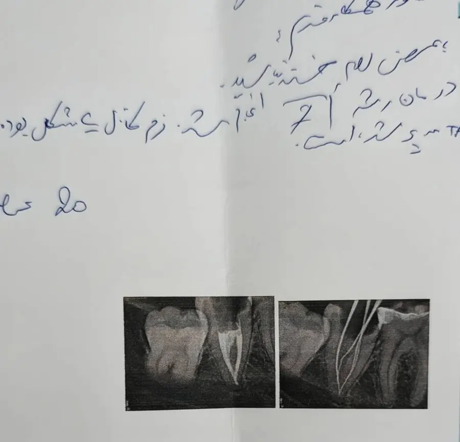

نسخه استخراجشده؛ ترجمه یا تأیید علمی انجام نشده است. وضعیت: captured
دندان C-shape اندوشدهای برای بازسازی به تو رسیده است. کانالها توسط متخصص اندو با MTA پر شدهاند و عملاً امکان استفاده از کانال بهعنوان مسیر پست وجود ندارد. حالا چه؟

در دندانهای C-shape آناتومی کانال پیچیده است و استفاده از کانال برای پست، حتی در حالت عادی هم میتواند محدود یا پرریسک باشد.
در دندانهای اندوشده، یکی از خطاهای رایج این است که بازسازی بهصورت خودکار با منطق «پست و کور» دیده شود؛ انگار اگر کانال قابل استفاده نباشد، مسیر درمانی هم بسته میشود. نباید تمام تصمیم را حول این سؤال بچرخانی که «حالا بدون پست چه کنیم؟»
از نگاه پروتزی، سؤال اصلی این نیست که آیا میتوانیم پست بگذاریم یا نه؛ سؤال اصلی این است که با ساختار باقیماندهی دندان، چه نوع بازسازی قابل پیشبینیتر است.
بسته به میزان نسج باقیمانده، ارتفاع دیوارهها، پهنای ایستموس، وضعیت اکلوزال و نیاز به پوشش کاسپ، میتوان به انتخابهای دیگری فکر کرد:
وقتی کانال دیگر منبع گیر نیست، نباید آن را مرکز تصمیمگیری قرار داد. در دندانهای مولر، مخصوصاً با پالپچمبر قابل استفاده، گیر و مقاومت میتواند از طراحی کرونال، چسبندگی، پوشش مناسب کاسپها و فرم رستوریشن تأمین شود؛ نه الزاماً از پست.
در بازسازی پروتزی دندانهای C-shape یا دندانهایی که کانالشان با MTA پر شده، نبود امکان پست به معنای بسته شدن مسیر درمان نیست. گاهی تصمیم درست این است که کانال را از مدل ذهنی حذف کنی و درمان را بر اساس معماری تاجی و طراحی رستوریشن بسازی.
نوع سؤال: ساخت کلمه · 3 خانه
حروف منبع: ر · ک · و